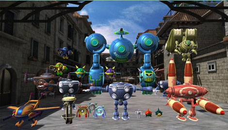
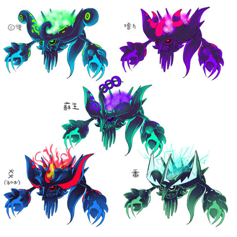
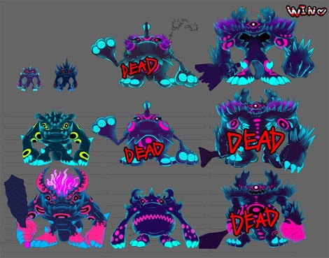
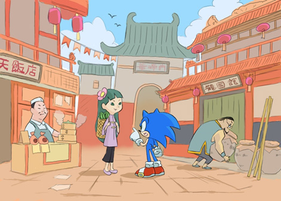
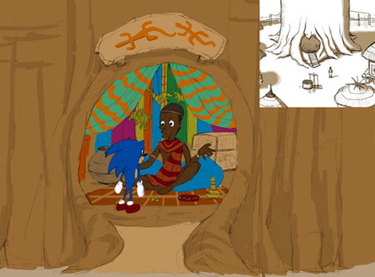
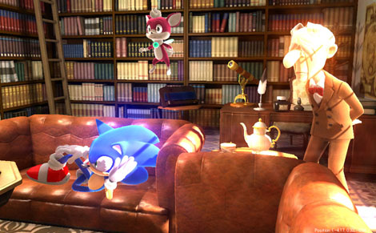
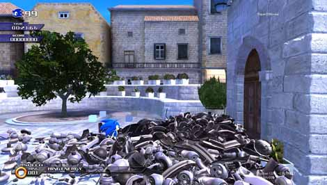
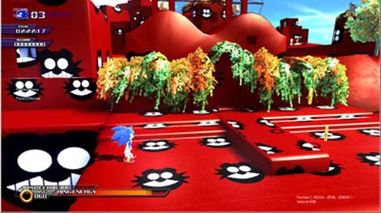
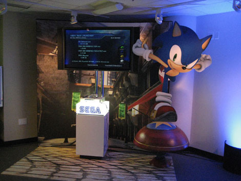
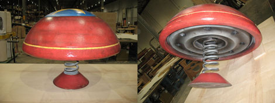

『突然の大量ハミだし！ その理由は……』
2009年04月15日
皆さまこんにちは！
マツバラです！
ヨシノです。
『SWA』の発売から
もうすぐ2ヶ月が経とうとしていますね。
本当、早いなあ……。
さあ、今日は何をハミだそうか？
実はもう決めてあるのだ。
おっ！
ネタが出てるなんて珍しい！
教えて～！
名づけて。
開発中のマル秘ソニック画像
大放出回～。
おおー！
開発スタッフが
情報交換するためのサーバに上がっていた
お宝画像を片っ端から一挙に大公開。
それは、いいかも！
でも、勝手に掲載しちゃって
デザインスタッフさんに怒られないかなあ……
そこはそれ、
いつものように景気良く怒られようよ。
……そうだね。
では、いきます。
1枚目。

わっ！
エッグマンメカ大集合！！
大きさを比べるための資料なのかなあ。
一同に揃うと壮観。
エッグマンって
打倒ソニックのためにこんなに沢山作ったんだね！
さすが天才科学者！
…………
(なんか夢見がちなこと言ってるな)
エネミーの画像は
かなりたくさんあったよ。
これとか……

これとか。

「DEAD」って書いてある……
ボツになった、って意味かな。
こいつらとも戦ってみたかったね！
どんどんいくよー。
お次は、こちら。
えっ？ えっ？
今回はテンポ早いよ！

かわいーい！
チュンナンっぽい絵だー！
これは、コンセプトアートというやつですな。
ゲームの中の世界を作るとき、
イメージを共有するために
描かれる絵のことです。
ここを出発点に
世界が広がっていったんだね……
まだまだ発掘。
おりゃー。

マズーリのショップかな？
もう、かなり前のものだから
実際にゲーム化されたものとは
かなり違うところもあるね。
たくさんのデザインスタッフが
これを見ながらイメージを膨らませていって
『SWA』の国々ができたんだ。
これはちょっと感動モノだね！
次は、ちょっと笑える画像集。
じゃーん。

ソニックきゅんが
ピックル教授の研究室で
すっかり自宅感覚でくつろいでる！
ソファをとられたピックル教授に
なにやら哀愁を感じますな……
開発中、スタッフは、こんなふうに
実際のゲーム画面には出てこない画像を作って
遊んだりしてました。
これもお宝画像だね！
まだまだ、見たい！
任せろ。
ほい。

ソニックきゅんが
山ほどのスクラップにうもれてる！！
エッグマンメカの部品でしょうか。
題して『壊しすぎ』。
あっ！
こんなのも見つけた！

ほう。これがウワサのエッグマンランド。
よ～く見て。
ほら、この地形、見覚えない？
ここ、アポトスだよ！
…………本当だ。
奥に、非常にセンスの悪い風車が……
テクスチャを張り替えちゃった画像だね！
では、お遊び写真は
このくらいにして……
なになに？
まだあるの！

外国のイベントの写真を
発掘してみた。
おおっ、セガブースだね！
おっきいソニックきゅんがいる～！
特大ソニックパネルもさることながら、
注目すべきは下のスプリングです。
え？

このように、
リアルに作られていたみたい。
…………
で、どこに行けば踏めるの？
これ。
いや、踏みに行くのはやめとけ。
踏みたい～！！
ビヨーンってやってみたい～！！
たぶん、
命がけになると思うけど……
はー！
豪華な画像ばっかりだったね！
……でも、今回は
突然、画像大放出をを始めるなんて
どうしたの？
いや、最後だから
悔いのないようにハミだしとこうと思って。
……最後？
うん。
これで終わりだから、
あますことなくハミださねば、と……
き、聞いてないよ！！
アッハッハッハ。
驚いたか。
『SWA』のことをもっと知ってもらうために
「やらせてください！」と息まいて始めたこのブログ。
ご好評につき、予想以上に長いことやらせてもらってたのだ。
でも、そろそろかな、と。
そ、そんな……
皆さま、
毎度好き勝手にやらかすブログでしたが
ここまでお付き合いありがとうございました。
私自身、
とても楽しんで連載させて頂いておりました。
当ブログに寄せられた
皆様のあたたかいメッセーやイラスト、写真には、本当に感動しました。
このゲームの開発に関われた私は幸せものです。
ああっ！
もう締めの挨拶にはいってる！！
ちょっと待って！
私も私も……！
皆さま、5ヶ月という短い期間でしたが、
お付き合い頂き、どうもありがとうございました。
想像以上にたくさんの方に読んで頂いて、
本当に感謝しています！
これからもソニックをよろしくお願いいたします☆
それでは、皆さま。
未練は尽きませんが、このあたりで。
またどこかでお会いできることを
願ってます！
本当に……
ありがとうございました！！
最後に一言……
ソニックきゅんは
永遠に不滅です！！
マツバラ、ヨダレヨダレ。
日時: 2009年04月15日 12:00 | パーマリンク


 ソニックを愛する、元気な『SWA』2年目プランナー。
ソニックを愛する、元気な『SWA』2年目プランナー。 マイペースな『SWA』2年目プランナー。
マイペースな『SWA』2年目プランナー。
 ご意見・ご要望はこちら
ご意見・ご要望はこちら RSS
RSS